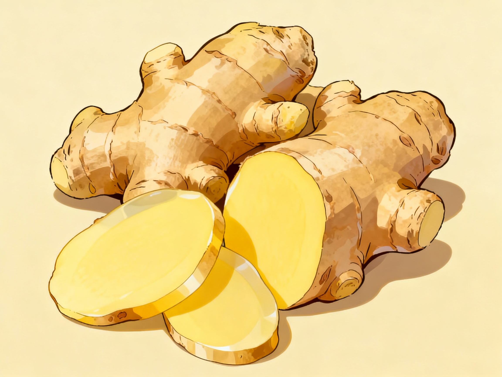

Ginger: Warm Spice for Food and Comfort
Ginger is an aromatic root that adds a warm, slightly spicy flavor to teas, stir-fries, soups, and baked foods. In home gardens, a small patch of ginger can grow well in warm, shaded soil and can be harvested as needed for fresh cooking.
Ginger contains natural plant compounds, including gingerols, and provides small amounts of vitamins and minerals while remaining very low in calories. Many people enjoy it in hot drinks or broths when they want something soothing for the throat or to help with mild digestive discomfort.
Around the world, families often prepare ginger tea with lemon or honey as a simple home remedy for cold, rainy days. These traditional uses are meant for comfort and should not replace medical care if someone has serious or lasting symptoms.
Information about ginger’s nutrients and traditional uses is summarized from USDA FoodData Central and general health articles on ginger from reputable medical and nutrition websites. Ginger overview – MedicineNet .